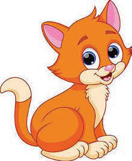

Ninafahamu viumbehai katika mazingira yangu

Wanyama na mimea ni viumbehai wanaopatikana katika mazingira yangu.
Shughuli ya pili
(a) Tembelea mazingira ya nje ya darasa.
Kisha, chunguza viumbehai wanaopatikana katika mazingira hayo.
(i) Bainisha viumbehai uliowaona au ulioelezewa.
(ii) Chagua kiumbehai mmoja kati ya uliowaona, kisha eleza jinsi anavyoonekana.
(b) Tumia vifaa vya TEHAMA kuangalia video au picha zinazoonesha viumbehai mbalimbali waliopo katika mazingira.
Chagua viumbehai wawili kati ya uliowaona, kisha elezea kuhusu mazingira wanamoishi.